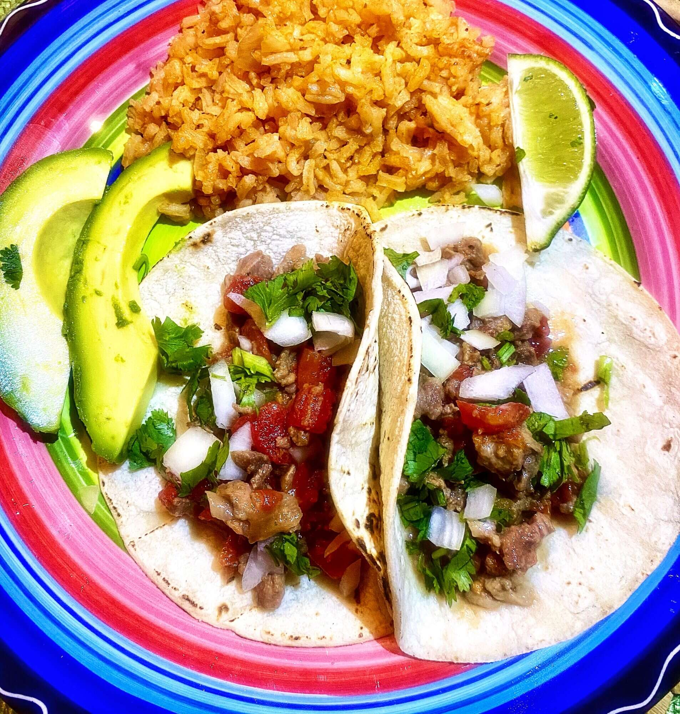

Carne Picada Tacos

Description
Carne picada is a cross between carne asada and ground beef. These tacos are simple and easy.
If you don't top these with cilantro, lime, and homemade salsa verde then you are doing it wrong!
Ingredients
- Corn Tortillas
- 2 cups prepared carne picada
- Chopped onion (amount should be beyond what is reasonable)
- A lot of fresh cilantro (even more than the onion)
- 2 table spoons of salsa
- 1/2 limes cut into wedges
- Lots of love
Steps
- Cook tortillas in a pan of vegetable oil.
- Place enough carne on the tortilla to give you ojitos!
- Top with onions, cilantro, and homemade salsa verde.
- Serve with lime wedges and cry as you experience something biblical.